입력 변수 전처리 과정
데이터 전처리, 각 변수들과 승리의 관계
Download Data set핵 유저 너 나와!
핵 유저로 인한 승률에 미치는 악영향
결측치와 이상치 제거
나는 Kaggle에서 가져온 데이터를 참고하여
데이터 전처리를 진행하였다.
핵 사용에 대한 데이터는 입력 데이터에 포함되어 있지 않으므로
입력 변수에서 제외하였다.
나는 Kaggle에서 가져온 데이터를 참고하여
데이터 전처리를 진행하였다.
핵 사용에 대한 데이터는 입력 데이터에 포함되어 있지 않으므로
입력 변수에서 제외하였다.
이상치 제거하기
데이터 이상치 제거
입력 변수와 출력 변수의 관계를 시각화 해보니,
어렵지 않게 이상한 데이터를 발견할 수가 있었다.
예를들어 걸음 수는 0인데 1킬 이상, 무기 소지, 운전 등
이러한 데이터들을 이상치로 판단했다.
WINPLACEPERC칼럼은 승률이다.
예측하고자하는 목표 변수 즉 종속 변수이다. 또한 나의 프로젝트에서는
1인에 대한 승률만 조사하기로 했고,
2(Duo),4(Squad)인조는 계산의 복잡성 및 데이터 부족으로 인해
칼럼에서 삭제를 하였고 이로써 데이터 전처리는 완료했다.
어렵지 않게 이상한 데이터를 발견할 수가 있었다.
예를들어 걸음 수는 0인데 1킬 이상, 무기 소지, 운전 등
이러한 데이터들을 이상치로 판단했다.
WINPLACEPERC칼럼은 승률이다.
예측하고자하는 목표 변수 즉 종속 변수이다. 또한 나의 프로젝트에서는
1인에 대한 승률만 조사하기로 했고,
2(Duo),4(Squad)인조는 계산의 복잡성 및 데이터 부족으로 인해
칼럼에서 삭제를 하였고 이로써 데이터 전처리는 완료했다.
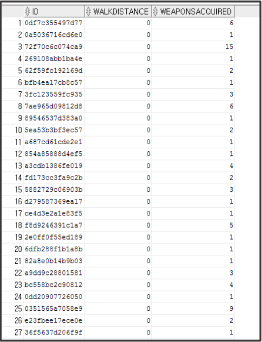
적 플레이어를 사살하라!
미리 요약
평균적으로 사람은 0.9345명의 플레이어를 죽이고,
99%의 사람들은 7.0명 이하의 킬을 기록했으며,
기록된 최대 킬 수는 60명이다.
그러나 이것이 직접적으로 승률과의 관계로
이어지는지는 아직 확인할 수 없다.
99%의 사람들은 7.0명 이하의 킬을 기록했으며,
기록된 최대 킬 수는 60명이다.
그러나 이것이 직접적으로 승률과의 관계로
이어지는지는 아직 확인할 수 없다.
킬 수와 승리와의 관계
그룹별 킬수와 승리의 관계
보이는 것과 같다.
플레이어를 많이 죽이는 유저의 승률이 높았다.
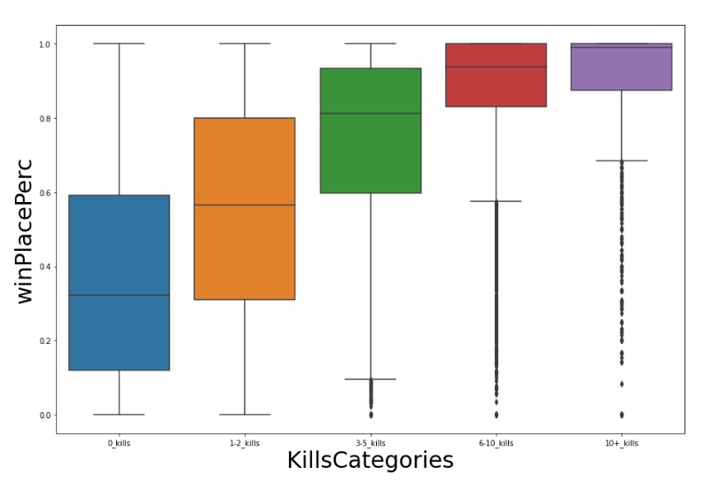
플레이어들의 킬 수
0킬이 가장 많은 비율을 차지한다.
(대부분의 유저가 1킬도 하지 못하고 죽음)
그러나 킬수가 높은 유저가 곧 승률이 높다는 것은 아니다.
(대부분의 유저가 1킬도 하지 못하고 죽음)
그러나 킬수가 높은 유저가 곧 승률이 높다는 것은 아니다.
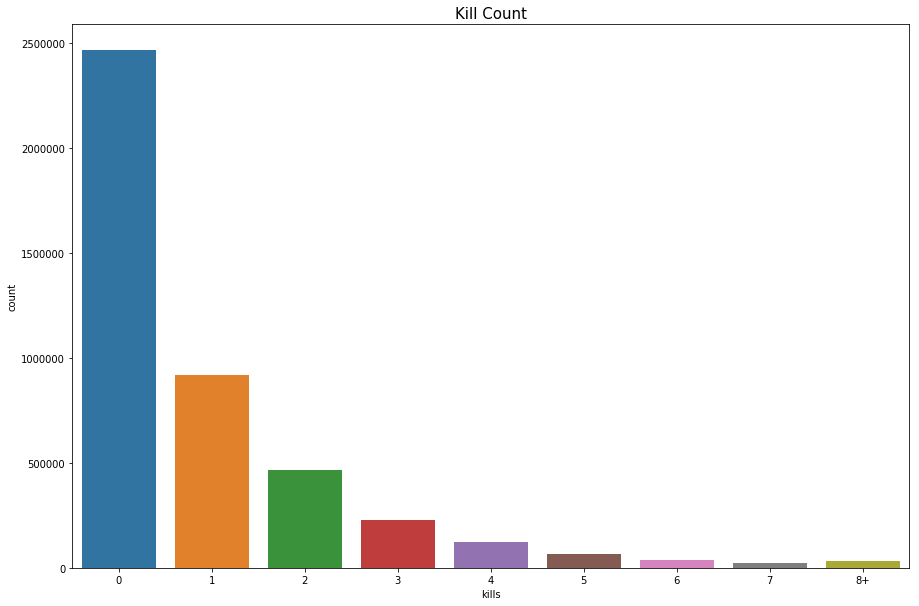
달리고 또 달려라!
미리 요약
평균적인 사람은 1055.1m를 걷고,
99%의 사람들은 4138.0m 이하를 걸은 반면,
걸음 최대 걸음 수는 17300.0m를 걸었다.
99%의 사람들은 4138.0m 이하를 걸은 반면,
걸음 최대 걸음 수는 17300.0m를 걸었다.
플레이어들의 걷는 거리
대부분의 사람들은 0걸음이다.
이는 그들이 한 걸음도 내딛기도 전에 죽었다는 것을 의미한다.
0킬과 마찬가지로 걸음걸이 또한
0이 가장 많은 비율을 차지한다.
0이 가장 많은 비율을 차지한다.
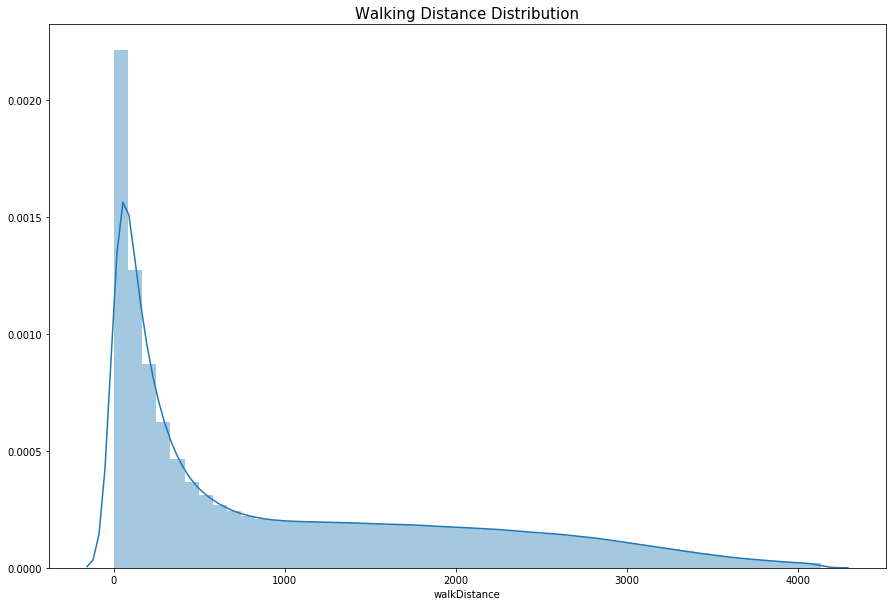
걸음걸이와 승리와의 관계
상관관계가 확실하게 보인다.
많이 걸은 사람일 수록
승률에 가깝게 많이 나타나고
이것이 의미하는 바는 승리를 위해서는
많이 걷는 것이 더욱 유리하다는 것이다.
이것이 의미하는 바는 승리를 위해서는
많이 걷는 것이 더욱 유리하다는 것이다.
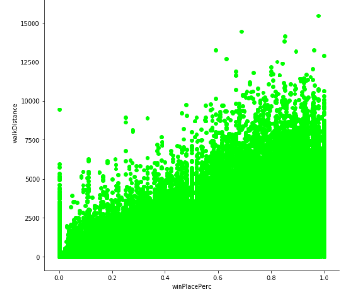
운전은 역시 안전운전!
미리 요약
평균적인 사람은 423.9m를 운전하고,
99%의 사람들은 6,133.0m 이하를 운전한 반면,
운전 최고거리는 48,390m를 운전했다.
99%의 사람들은 6,133.0m 이하를 운전한 반면,
운전 최고거리는 48,390m를 운전했다.
플레이어들의 운전거리
대부분이 운전조차 하지 않았다.
또한 먼 거리를 운전한 유저도 많진 않아보인다.
운전 거리와 승리와의 관계를
다시 알아보자.
다시 알아보자.
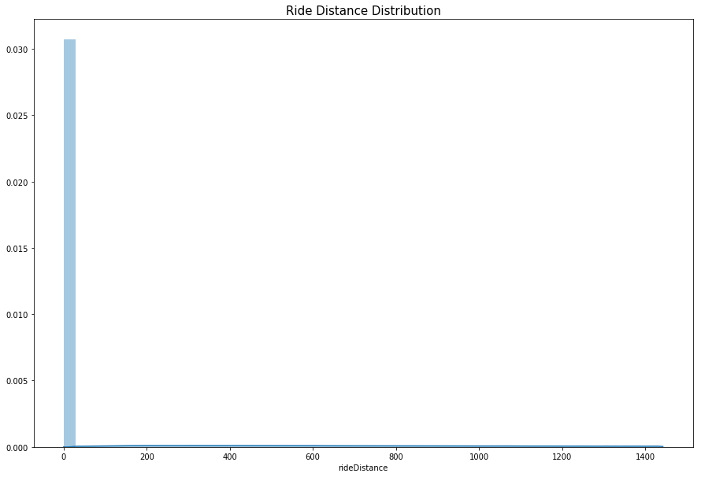
플레이어들의 운전 거리
운전거리와 승리와는?
작은 상관 관계가 나타난다.
Destroying 변수가 따로있었다.
알아보니 차량 파괴와 관련이 있었다.
그렇다면 차량 파괴와 승리의 관계가 어떻게 되는지 알아보자.
알아보니 차량 파괴와 관련이 있었다.
그렇다면 차량 파괴와 승리의 관계가 어떻게 되는지 알아보자.
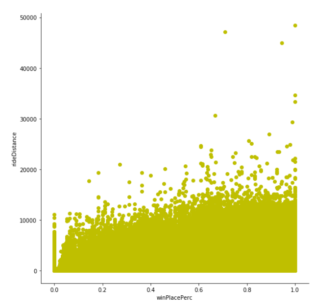
차량 파괴와 승리와의 관계
차량 파괴와 승리와는?
차량 파괴 숫자가 높을 수록 승리에 가까워진다.
즉, 차량을 파괴하면 자동적으로 1킬 이상을 하게 되는 것이므로 승률과 관계가 확실히 나타난다.
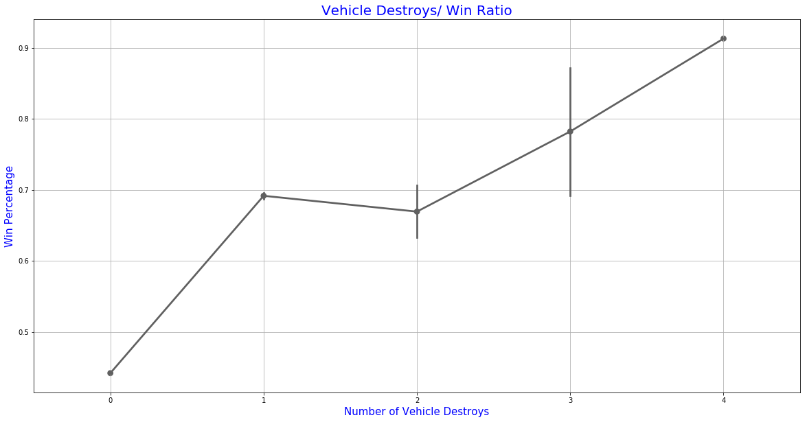
수영은 역시 여름이 최고
미리 요약
평균적인 사람은 4.1m를 수영하고,
99%의 사람들은 116m 이하로 수영한 반면,
수영 최대 거리는 5286.0m를 수영했다.
99%의 사람들은 116m 이하로 수영한 반면,
수영 최대 거리는 5286.0m를 수영했다.
플레이어들의 수영 거리
수영 거리와 승리와는?
수영을하는 사람이 거의 없다.
승률과의 관계를 한 번 보자
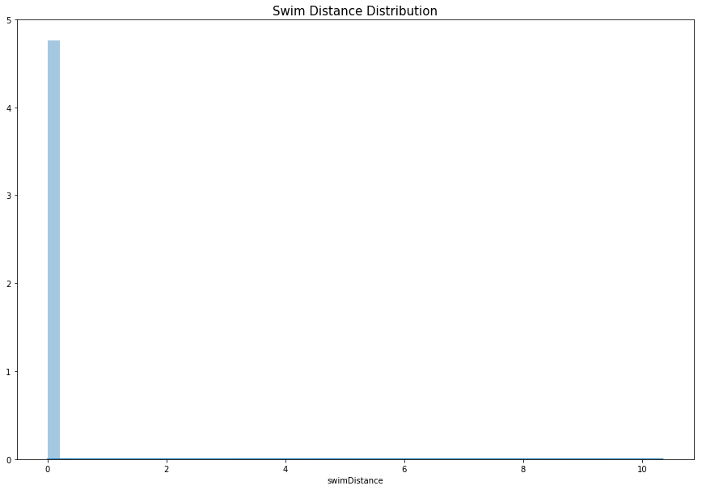
플레이어들의 그룹별 수영 거리
그룹별 수영 거리이다.
그러나 중요한 것을 놓쳐서는 안된다!
현재 모은 PUBG의 DATA SET에는
존재하는 맵이 총 3개이고 그 중 하나의 맵에는 물이 거의 없었다.
그러한 이유로 수영은 변수의 항목에서 빼도록 하겠다.
존재하는 맵이 총 3개이고 그 중 하나의 맵에는 물이 거의 없었다.
그러한 이유로 수영은 변수의 항목에서 빼도록 하겠다.
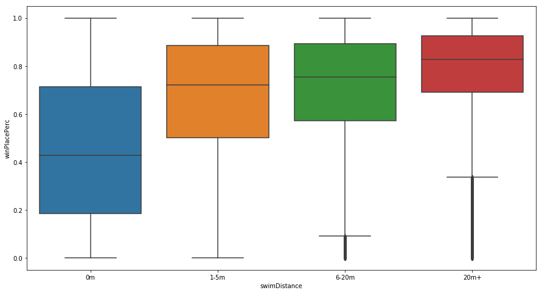
아프면 청춘이 아니라 병원을 가!
미리 요약
평균적인 사람은 1.2개의 힐 아이템을 사용하고,
99%의 사람들은 11.0 이하를 사용하는 반면,
가장 많이 사용한 사람은 59개를 사용했다.
99%의 사람들은 11.0 이하를 사용하는 반면,
가장 많이 사용한 사람은 59개를 사용했다.
치유냐 각성이냐
치유 아이템과 각성 아이템의 승률
데이터를 보니 두 아이템 모두,
확실히 사용을 잘 할 수록 승률이 높게 나오고 있다,
근소한 차이로 각성제가 더 높은 승률을 가진다.
상황에 맞게 아이템을 잘 활용하는 것이 승률에 영향이 높게 나올 것이다.
확실히 사용을 잘 할 수록 승률이 높게 나오고 있다,
근소한 차이로 각성제가 더 높은 승률을 가진다.
상황에 맞게 아이템을 잘 활용하는 것이 승률에 영향이 높게 나올 것이다.
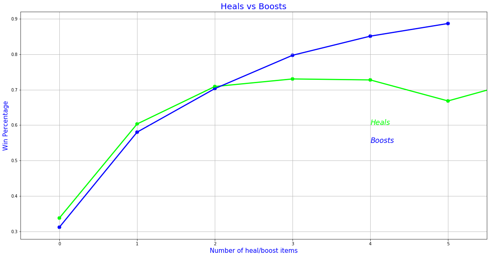
데이터셋의 한계점
자기장(시간초과), 다양한 맵에 대한 정보의 부재
데이터셋에서 다른 맵들의 정보가 부족한 연유로
승률에 영향을 줄 것 같았던
자기장(시간초과) 데이터는 반영하지 못하였다.
Education

Tools and skills used
Visual Studio Code
Github
Spyder
Pandas
Machine learning and deep learning
Chat GPT
Photo Shop
Power BI
Power Point
languages Used
HTML
CSS
JavaScript
Python
Django
Excel